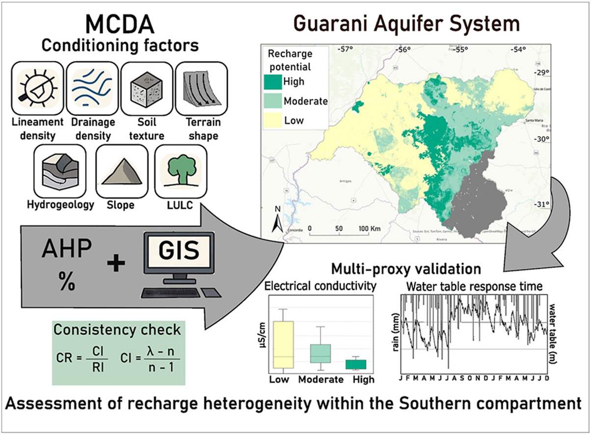

Recharge heterogenity in the Guarani Aquifer System: GIS-base MCDA mapping in the southern Brazil

Resumo em Português
No Sistema Aquífero Guarani, a dinâmica de recarga permanece pouco compreendida, particularmente em sua zona de afloramento sul, apesar de sua relevância como uma importante área de recarga transfronteiriça que sustenta fluxos para a Argentina e o Uruguai. Este estudo mapeia o potencial de recarga de água subterrânea no setor sul brasileiro do SAG utilizando uma análise de decisão multicritério baseada em SIG, apoiada pelo processo de hierarquia analítica. Sete critérios foram integrados: hidrogeologia, densidade de lineamentos, densidade de drenagem, declividade, forma do terreno, textura do solo e uso/cobertura da terra. Cada fator foi ponderado por meio de comparações aos pares e reclassificado em uma escala padronizada para produzir um mapa composto de potencial de recarga. A validação utilizando a condutividade elétrica da água subterrânea e a resposta do nível da água subterrânea a eventos de precipitação confirmou os padrões espaciais identificados pelo modelo. Os resultados mostram que a recarga não está distribuída uniformemente ao longo do afloramento; Em vez disso, zonas de baixa recarga dominam 51% da área, zonas de recarga moderada cobrem 31% e o alto potencial de recarga se restringe a 18%, principalmente ao longo de um corredor central norte-sul associado a arenitos SAG mais permeáveis e janelas estruturalmente controladas sob a cobertura basáltica. Essas descobertas desafiam a suposição de recarga contínua em todo o afloramento e refinam a compreensão conceitual regional da recarga no sul do SAG, demonstrando que a recarga não é distribuída uniformemente pela zona de afloramento. Em vez disso, o potencial de recarga é fortemente condicionado pela interação entre litologia, permeabilidade estrutural, topografia, solos e uso da terra. Essas descobertas fornecem uma base espacial para priorizar a proteção das águas subterrâneas e o planejamento do uso da terra no sul do SAG e apoiam a gestão de águas subterrâneas baseada em evidências científicas em grandes aquíferos transfronteiriços.